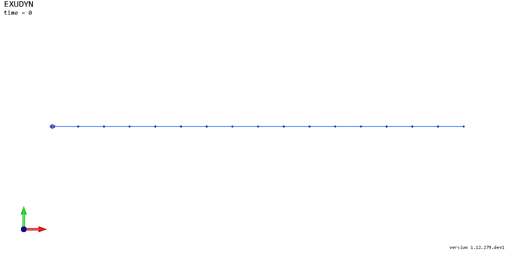
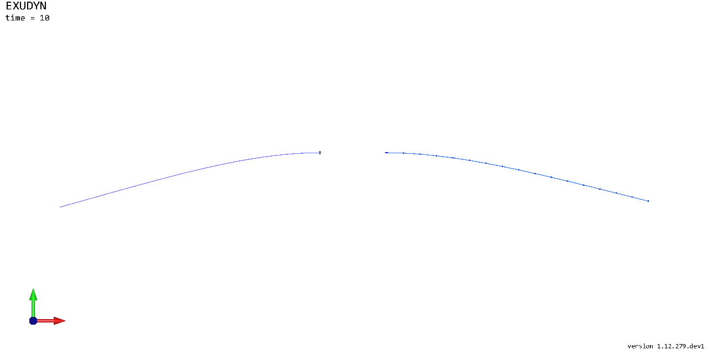
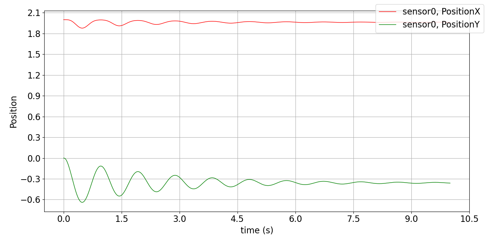

Flexible beams
Notebook python/Notebooks/tutorialFlexibleBeams.ipynb.
Two simple planar beams and the utility functions that build them: the ObjectBeamGeometricallyExact2D, a shear
deformable Reissner-Timoshenko beam, and the thin cable ObjectANCFCable2D, a large deformation Bernoulli-Euler beam.
Both beams are highly flexible, 2 m long, 5 mm high and 10 mm wide, made of steel. The shear deformable beam is
clamped to the ground, the cable is clamped to a moving ground. The outputs below each cell are those of the last run.
import exudyn as exu
from exudyn.utilities import * #includes itemInterface, rigidBodyUtilities, pi, sin, cos, sqrt and SmoothStep
from exudyn.beams import GenerateBeamElementsAlongLine
from exudyn.interactive import ShowImage
import numpy as np
SC = exu.SystemContainer()
mbs = SC.AddSystem()
The beam parameters, the discretization and the geometry of both beams:
numberOfElements = 16
L = 2 # length of beam
E = 2e11 # steel
rho = 7800
h = 0.005 # height of rectangular beam element in m
b = 0.01 # width of rectangular beam element in m
A = b*h # cross sectional area of beam element in m^2
I = b*h**3/12 # second moment of area of beam element in m^4
nu = 0.3 # Poisson's ratio
EI = E*I
EA = E*A
rhoA = rho*A
rhoI = rho*I
ks = 10*(1+nu)/(12+11*nu) # shear correction factor
G = E/(2*(1+nu)) # shear modulus
GA = ks*G*A # shear stiffness of beam
g = [0,-9.81,0] # gravity vector
positionStart = [0,0,0]
positionEnd = [L,0,0]
A beam is made of 2D rigid body nodes (or slope nodes) and beam elements, with constraints and loads. The utility
function GenerateBeamElementsAlongLine does this for straight beams: discretization, constraints and gravity. It
takes a beam template, which holds the beam parameters - here of the geometrically exact beam - and fills in the
element lengths and the nodes. groundConstraintsStart=[1,1,1] clamps the first node:
beamTemplate = Beam2D(nodeNumbers=[-1,-1], #filled by the function
massPerLength=rhoA,
crossSectionInertia=rhoI,
bendingStiffness=EI,
axialStiffness=EA,
shearStiffness=GA,
bendingDamping=0.02*EI,
visualization=VObjectBeamGeometricallyExact2D(drawHeight=h))
beamData = GenerateBeamElementsAlongLine(mbs, positionStart, positionEnd, numberOfElements, beamTemplate,
gravity=g, groundConstraintsStart=[1,1,1])
The same for the ANCF cable elements (Bernoulli-Euler), without constraints:
cableTemplate = Cable2D(nodeNumbers=[-1,-1],
massPerLength=rhoA,
bendingStiffness=EI,
axialStiffness=EA,
bendingDamping=0.02*EI,
visualization=VCable2D(drawHeight=h))
cableData = GenerateBeamElementsAlongLine(mbs, positionStart, positionEnd, numberOfElements, cableTemplate,
gravity=g)
A ground and two markers, to attach the first node of the cable with a generic joint:
oGround = mbs.CreateGround(referencePosition=[0,0,0])
mGround = mbs.AddMarker(MarkerBodyRigid(bodyNumber=oGround, localPosition=[0,0,0]))
mCable = mbs.AddMarker(MarkerNodeRigid(nodeNumber=cableData['nodes'][0]))
The cable shall move relative to the ground: a user function prescribes the relative rotation and the (corotated) translation in the joint, smoothly in time:
def UFoffset(mbs, t, itemNumber, offsetUserFunctionParameters):
x = SmoothStep(t, 2, 4, 0, 0.5) #translate in local joint coordinates
phi = SmoothStep(t, 5, 10, 0, pi) #rotates frame of mGround
return [x, 0,0,0,0,phi]
The joint fixes the two translations in the plane and the rotation about \(z\) - for 2D objects, only these three may be constrained:
oJoint = mbs.AddObject(GenericJoint(markerNumbers=[mGround, mCable],
constrainedAxes=[1,1,0, 0,0,1],
offsetUserFunction=UFoffset,
visualization=VGenericJoint(axesRadius=0.01, axesLength=0.02)))
sTip = mbs.AddSensor(SensorNode(nodeNumber=beamData['nodes'][-1], storeInternal=True,
outputVariableType=exu.OutputVariableType.Position))
As before: assemble, and the simulation settings - a sparse linear solver and the modified Newton method for a faster simulation - and some visualization settings:
mbs.Assemble()
simulationSettings = exu.SimulationSettings()
tEnd = 10
stepSize = 0.005
simulationSettings.timeIntegration.numberOfSteps = int(tEnd/stepSize)
simulationSettings.timeIntegration.endTime = tEnd
simulationSettings.solution.file.writePeriod = 0.005
simulationSettings.linearSolver.solverType = exu.LinearSolverType.EigenSparse
simulationSettings.timeIntegration.newton.useModifiedNewton = True #for faster simulation
SC.visualizationSettings.nodes.defaultSize = 0.01
SC.visualizationSettings.nodes.drawNodesAsPoint = False #show beam nodes
SC.visualizationSettings.bodies.beams.crossSectionFilled = True
SC.visualizationSettings.loads.show = False #the gravity loads of the nodes
SC.visualizationSettings.general.showSolverInformation = False
image = ShowImage(SC, size=[1280,640]) #the reference configuration


Solve in time. In a script, SC.renderer.Start() before and SC.renderer.Stop() after it show the motion, and
mbs.SolutionViewer() shows it again afterwards, as the simulation may be faster than you can follow. The lower beam
is clamped at its left end; the support of the upper beam is translated and rotated:
mbs.SolveDynamic(simulationSettings)
image = ShowImage(SC, size=[1280,640]) #the state at t=10 s


The tip of the clamped beam over time:
mbs.PlotSensor(sTip, components=[0,1], closeAll=True)


This is a starting point for beam models; further examples show more advanced functions, e.g. curved beams or reeving systems, a sliding joint, axially moving beams and contact between beams and sheaves.